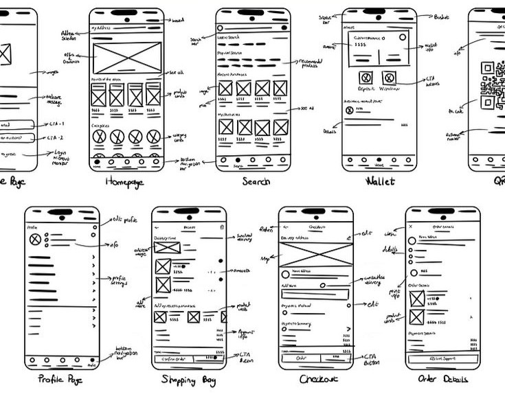
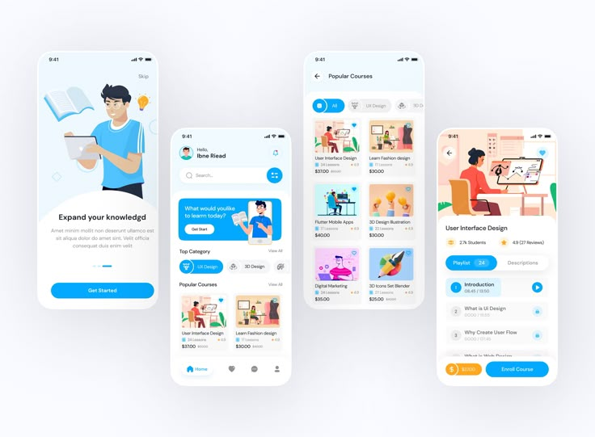

-

1) Wireframe
Wireframe adalah kerangka dasar dari halaman aplikasi atau website, biasanya dibuat hitam-putih tanpa visual detail. Fokus utamanya adalah tata letak dan urutan konten.
🎯Output (Keluaran):
Wireframe → Sketsa kotak-kotak yang menunjukkan letak tombol, teks, gambar, dll. Bisa dibuat di kertas atau aplikasi seperti Figma. -

2) Mockup
Setelah wireframe dibuat, desainer menambahkan warna, font, ikon, gambar, dan elemen grafis lainnya agar desain tampak seperti tampilan final. Estetika dan branding mulai diperhatikan.
🎯Output (Keluaran):
1) Mockup → Desain visual lengkap dan berwarna dari tampilan antarmuka.
2) UI Style Guide → Dokumen berisi panduan visual seperti warna utama, font yang digunakan, ukuran tombol, jarak antar elemen, dll. -
3) Prototipe
Mockup yang telah dibuat dijadikan prototipe interaktif. Prototipe memungkinkan pengguna untuk mencoba klik dan navigasi seperti menggunakan aplikasi asli, meskipun belum benar-benar berfungsi.
🎯Output (Keluaran):
Interactive Prototype → Simulasi desain yang bisa diklik, untuk menguji alur pengguna. Dibuat di tools seperti Figma (Prototype Mode), Adobe XD, dsb.